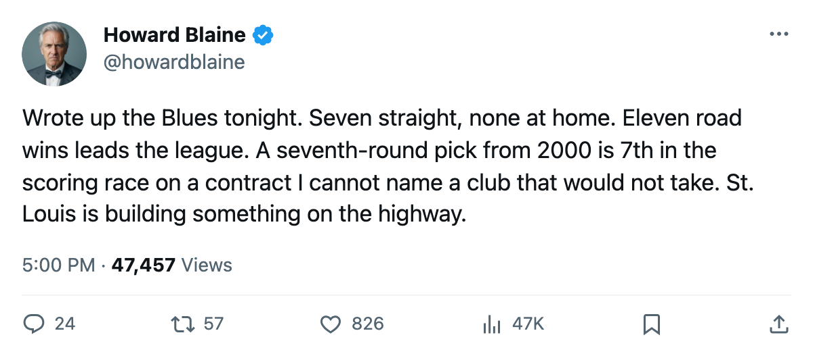
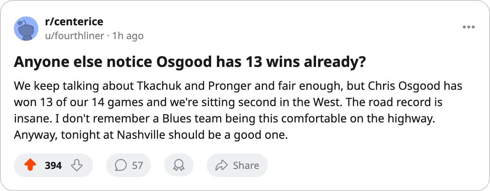

CBJ
CBJEleven and Three: St. Louis Has Won More on the Road Than Any Club in Hockey, and the Streak Has No Home Date
The Blues sit second in the West at 33 points. Four of their wins came at home. The other 10 came in someone else's building.
 Howard BlaineSenior writer, The Blaine Rankings · The Hockey Gazette
Howard BlaineSenior writer, The Blaine Rankings · The Hockey Gazette St. Louis Blues has won 7 consecutive games, and not one of them was played on its own ice. The streak, the longest in the Western Conference, began on November 13 in Atlanta and has carried through
St. Louis Blues has won 7 consecutive games, and not one of them was played on its own ice. The streak, the longest in the Western Conference, began on November 13 in Atlanta and has carried through  Tampa Bay Lightning,
Tampa Bay Lightning,  Florida Panthers,
Florida Panthers,  Washington Capitals,
Washington Capitals,  Philadelphia Flyers,
Philadelphia Flyers,  Pittsburgh Penguins and San Jose by a combined margin of 26 goals for, 14 against. Before the streak opened, the Blues lost 1-5 to
Pittsburgh Penguins and San Jose by a combined margin of 26 goals for, 14 against. Before the streak opened, the Blues lost 1-5 to  New York Rangers at home and 2-4 to
New York Rangers at home and 2-4 to  Minnesota Wild at home. The record at their own building this season reads 4 and 4. The record on the road reads 11 and 3.
Minnesota Wild at home. The record at their own building this season reads 4 and 4. The record on the road reads 11 and 3.
That 11 is the most road wins by any club in the league.  Dallas Stars sits next at 9, and Dallas has played one more road game than St. Louis. The Blues' .786 road winning percentage is the best among any club that has played 12 or more games away from home, and the next two names on that list, Dallas Stars at .600 and
Dallas Stars sits next at 9, and Dallas has played one more road game than St. Louis. The Blues' .786 road winning percentage is the best among any club that has played 12 or more games away from home, and the next two names on that list, Dallas Stars at .600 and  Nashville Predators at .571, trail by a distance that a 22-game sample does not easily explain away with a schedule quirk.
Nashville Predators at .571, trail by a distance that a 22-game sample does not easily explain away with a schedule quirk.
St. Louis Blues has 33 points, second in the Western Conference behind Dallas at 35. Of those 33 points, 28 came on the road and 8 came at home, with the overtime losses distributed across both. The Blues have more points from away games than Nashville Predators has total.
The streak, game by game
The margins inside the streak tell what happened. St. Louis Blues went into Philadelphia Flyers and scored 5, went into Washington Capitals and scored 4, and went into Atlanta and scored 4 in a one-goal game. The only game in the streak decided by a single goal was the opener, a 4-3 win in Atlanta on November 13. The other six produced margins of 1, 1, 2, 2, 2 and 1, meaning five of the seven were decided by two goals or fewer, which is the same tight-margin profile this desk described in Dallas's defensive record earlier in the month.
The goaltending is where the Blues part company with the other clubs grinding out close wins.  Chris Osgood85 has 13 wins against 5 losses and a 2.33 goals-against average. He is not the highest-graded goaltender on the sheet at 85 overall, but he has been the workhorse, and 13 of the Blues' 14 wins have come with him in the lineup. The defense in front of him has allowed 55 goals in 22 games, which is second-fewest in the Western Conference behind Dallas at 48.
Chris Osgood85 has 13 wins against 5 losses and a 2.33 goals-against average. He is not the highest-graded goaltender on the sheet at 85 overall, but he has been the workhorse, and 13 of the Blues' 14 wins have come with him in the lineup. The defense in front of him has allowed 55 goals in 22 games, which is second-fewest in the Western Conference behind Dallas at 48.
A seventh-rounder at $0.60M is carrying the offense
Brandon Reid79 sits 7th in the league's scoring race with 29 points in 22 games, 10 goals and 19 assists. He was drafted 208th overall in the seventh round of 2000. He carries a Book grade of 79, up 4 on the Bureau's Development Index, on a base of 77. His contract pays $0.60M and has 0 year(s) left, meaning it expires in April.
At $0.021M per point this season, Reid is the cheapest production on the Blues' roster and one of the cheapest in hockey. His 127-point pace over 82 games sits behind only  Markus Naslund91 and
Markus Naslund91 and  David Legwand89 on the league's pace chart. His speed grades are 99 on acceleration and 99 on skating, and his puckhandling sits at 89. The weaknesses, at 50 on checking, 50 on fighting and 50 on toughness, explain why a man with those offensive tools slid to the 208th pick and stayed there for five seasons.
David Legwand89 on the league's pace chart. His speed grades are 99 on acceleration and 99 on skating, and his puckhandling sits at 89. The weaknesses, at 50 on checking, 50 on fighting and 50 on toughness, explain why a man with those offensive tools slid to the 208th pick and stayed there for five seasons.
Reid arrived in St. Louis on March 4, 2005, after spending time with  Vancouver Canucks before the record opened. He has been with St. Louis Blues for 9 months as of today. His prior-season lines show 70 points in 76 games and 58 points in 73 games, both on the same $0.60M contract. This season's 29 points in 22 games puts him on a 108-point pace, which is a step below those earlier seasons in total volume but a step up in per-game rate from last year's 14.3 minutes a night to 18.9.
Vancouver Canucks before the record opened. He has been with St. Louis Blues for 9 months as of today. His prior-season lines show 70 points in 76 games and 58 points in 73 games, both on the same $0.60M contract. This season's 29 points in 22 games puts him on a 108-point pace, which is a step below those earlier seasons in total volume but a step up in per-game rate from last year's 14.3 minutes a night to 18.9.
The St. Louis Blues payroll of $69.76M has produced 33 points, which is $2.11M per point, third-best in the league behind Dallas at $1.66M and New Jersey at $2.01M. Reid's 29 points at $0.60M are a large part of why that number sits where it does.
The road record so far
Three years of road records across the league would be needed to know whether St. Louis Blues has a structural advantage away from home or whether this is a season where the travel schedule favored them. The sheet does not carry road records from before October 2004, so that question waits. What the sheet does carry is this: the Blues are 11-3 on the road at the quarter-mark, the 7-game streak has no home date, and tonight they play at Nashville Predators, the club they split a two-game season series with, where St. Louis Blues won 6-5 in the aggregate over 2 meetings. A point in Nashville tonight extends the road record to 12 games with a point.
The home record will eventually improve. Teams that play 41 home games do not finish at .500. But the 11 road wins already in the bank mean that even if St. Louis never wins more than 20 at home this season, the 33 points already collected put them ahead of the eighth-place club in the West,  Calgary Flames at 23, by 10 points with 60 games left.
Calgary Flames at 23, by 10 points with 60 games left.
The Blues have won 7 straight with no home dates in the streak, and they play for an eighth tonight.

